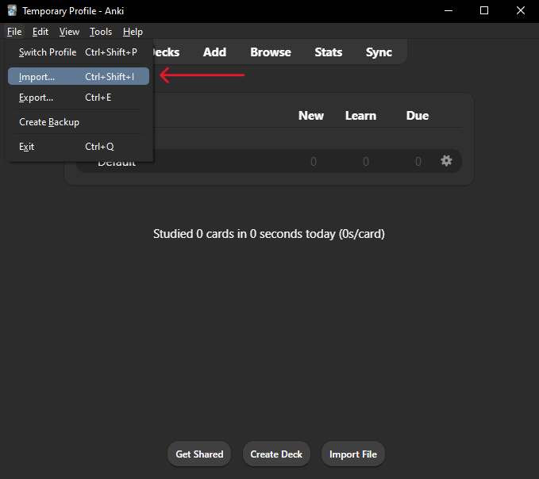

Instructions to getting the Flashcards JSON
Requirements:•Be on desktop
•Anki desktop application
•Browser with support for IndexDB extraction (Chrome based browsers ONLY)
In order to grab the flashcards from FlashCards world, we need to first import your flashcards library onto desktop. To do this:
Step 1. Import flashcards to the Flashcards.World website
Visit Flashcards.World and select "SYNC WITH MOBILE APP"In the Flashcards app on your phone,
•Click on the 3 dots in the top right corner.
•Click 'Sync'
•Click 'Generate Code'
•Click 'Generate Sync Code'
Step 2. Export IndexedDB
For Chrome, Edge, Opera and other Chromium based browsers, we recommend exporting IndexedDB using this extension
•Install the extension•Click on the extension
•Click "Select Database"
•Click "flashcards_db"
•Click Export
Step 3. Upload Database
Step 4. Import Flashcards to Anki
Open the Anki desktop app and click "File" in the top left corner then "Import"  Select the json file you downloaded from file explorer.Click import in the top right corner
Optional - Sync to mobile phone
If you have don't have an Anki account, Sign up here
In Anki Desktop, click "Sync" and then log in